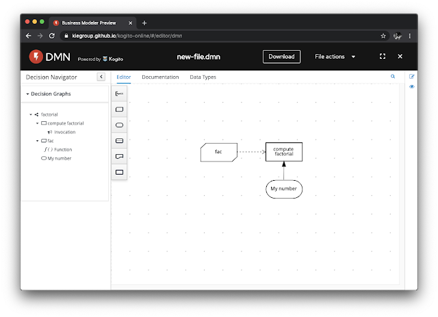

Functional Programming in DMN: it FEELs like recursing my university studies again
In this post, I would like to share interesting insights about recursion support in DMN and highlights how specific properties of the FEEL language enable functional programming constructs to be modeled in DMN.
We are going to start from a basic example, in order to demonstrate how the Business Friendliness nature of the FEEL language and DMN constructs, allow us to tame an otherwise commonly unpleasant problem: the definition of a recursive function. Then, we are going to adventure in FP land, and in the cradle of FEEL/DMN we will admire one of the best creatures of functional construct: the Y Combinator. At the end, we will find ourselves be asked the famous question again:
{kind=link}
Using the pure engineering approach, let’s dig into the matter right away!
Basic recursion example
The Drools DMN open source engine allows recursion support in DMN Business Knowledge Model nodes. This enables modeling of recursive functions very easily and it is our recommended approach when modeling recursive functions in DMN: allow the function to call itself by its name.
Let’s take a look at a simple example: modeling the factorial function in DMN.
We can use the Kogito DMN editor and define the DRD as follows: 
{kind=link}
With the “fac” Business Knowledge Model (in short, BKM) node defining the actual Factorial function recursively as:
{kind=link}
As we can notice, the function invokes itself as any other normal recursive function, the only difference here is that it is defined as part of a DMN Boxed Expression; the name of this function is defined by the BKM node with the boxed expression construct “fac”, then the body of the function make reference and invokes itself as part of the FEEL expression “fac(n-1)”.
We can use this BKM to calculate the actual result as passed by the Input Data node, as part of the “compute factorial” Decision, as:
{kind=link}
This works well and gives the expected results:
{
My number: 3
fac: function fac( n )
compute factorial: 6
}
About currying
DMN and more importantly the FEEL language allow to define and invoke curried functions.
This allows us to write in FEEL something like:
{ f : function(a) function(b) a + b, r : f(1)(2) }
where:
- we defined a feel:context with 2 entries
- the first entry is named “f” and defines a curried function: a function of one parameter “a” that, once invoked, will return a function of one parameter “b” that, once invoked, will return the sum of a+b
- the latter entry named “r” which invokes the curried function with a=1 and b=2.
Albeit this is potentially a weird looking FEEL expression, we are not surprised once executed r = 3.
We can do equivalently by using DMN Boxed Expression constructs:
{kind=link}
This is a BKM node named “curried sum”; it is a DMN Invocable of one parameter “a” that, once invoked, will return a function of one parameter “b” that, once invoked, returns the sum of a+b.
Again, we are not surprised once executed
curried sum(1)(2) = 3
Y Combinator: recursion without recursion support
Let’s go back for a moment to the earlier recursive function example; we overlooked the fact if it’s actually formally possible for a function to call itself by its name in DMN: the DMN specification does not explicitly support this, but it doesn’t explicitly forbid it either. In other terms, recursion support is not formally specified.
What-if we still needed to define a recursive function, but we found the road was still under construction, missing that formal recursion support? We can use a functional device, called the “Y Combinator” which allows anonymous functions to achieve recursion without relying on self-invocation by its own (unexisting) name.
Let’s look at an example; we can define the Y Combinator in DMN as follows:
{kind=link}
It is potentially a weird looking function :) let’s assume this was defined for us, and we can just make use of it.
We can use it to re-define the factorial calculation as:
{kind=link}
We can notice the body of the “fac” function definition is overall the same; however, this is not any longer a function invoking itself by its name: there is no trace of a call to “fac(…)” in the body of the function!
Naturally, there is still a form of recursion happening, but this time is leveraging the name of the parameters which are in scope of the closure: “f”.
The result works as expected:
fac(3) = 6
We can take a look at another example, defining the Fibonacci sequence using the Y Combinator in DMN:
{kind=link}
We notice again there is no call to “fib(…)” in the function body, yet recursion for the calculation of the Fibonacci sequence is performed thanks to the use of the Y Combinator.
Once again, the result works as expected:
fib(5) = [1, 1, 2, 3, 5]
For extra fun, we can re-define the Y Combinator using where possible the DMN Boxed Expression forms. This is an interesting exercise to see how closures are applied in their boxed variant. The Y Combinator definition could be refactored as:
{kind=link}
and that would yield again the same expected and correct results.
For (extra (extra fun)), we can re-define once more the Y Combinator in a single FEEL expression to calculate for instance the factorial of 4:
{ Y: function(f) (function(x) x(x))(function(y) f(function(x) y(y)(x))), fac: Y(function(f) function(n) if n > 1 then n * f(n-1) else 1), fac4: fac(4) }.fac4
The result is unsurprisingly: 24.
Conclusion
In this post, we have seen a basic example of recursion in DMN, and how to leverage recursion support in the engine is very simple to use; engine recursion support is the approach we recommend to achieve recursion DMN: give the function a name, and in the body of the function make use of that name to invoke itself. In the example, we have named the function “fac”, then we invoked “fac(…)” in the body of the function itself.
This approach is very practical, easy to model in DMN and works just fine.
We have also seen how DMN and FEEL do indeed support curried function definition and invocation. FEEL is (also) a functional language; all these properties allow us to define in DMN and use the Y Combinator, a functional device to achieve recursion without recursion support!
I personally found these exercises very interesting to apply functional programming concepts in DMN, while at the same time making sure the engine worked as expected. I would like to say special thanks to my colleagues Edoardo Vacchi and Luca Molteni for their support while discussing the Y Combinator and Currying functions.
Interested in DMN?
If you didn’t know about DMN before, you found this post interesting but looking for a gentle introduction to the DMN standard, we have just the right crash course on DMN, freely available for you at:
http://learn-dmn-in-15-minutes.com
You can find additional information on the Drools website here. Don’t hesitate to contact us for more information.